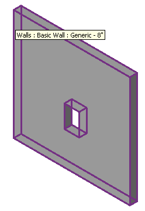
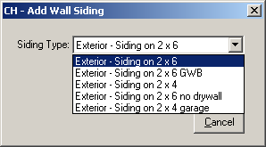
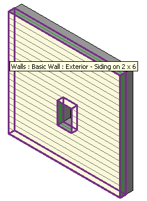

NewWall with Opening
We recently discussed a comment from Mike King on how to specify openings when constructing a slab, and that reminded me of some interesting sample code I received from Ning in a comment on using the NewWall method and passing in a CurveArray containing its edges to create a wall with a sloped profile. Ning's issue was to create a new wall with a CurveArray containing more than one loop.
What Ning's code does is to retrieve the elevation profile from an existing wall and then create a wall siding covering it. Here is an example wall with an opening before processing:

When you launch Ning's command on it, it first asks you which type of wall siding you would like to add:

The command then queries the existing wall for its profile including all the inner loops representing openings and converts them to a CurveArray in the proper format for calling the NewWall method to create the desired siding complete with all openings:

I tried to adapt Ning's method to create a slab with openings for Mike, but could not get it to work right away and gave up again on that. Also, Ning needed to apply a workaround to his code in some cases. However, it does demonstrate that it is possible to create a new wall complete with openings in one single fell swoop, which is why I wanted to present it here.
Ning implements a class WallProfiles which provides the following functionality:
- Construct a list of wall siding types and prompt the user to select which one to use.
- Retrieve all walls or just the preselected ones.
- Determine their wall elevation profiles using the GetProfiles method.
GetProfiles creates a List<List<XYZ>> instance to represent each wall profile, where the inner lists represent the individual loops. A wall with no openings will have just one single loop, and the first loop is always the outer one, if I remember correctly.
In order to make the calls to NewWall, we need to convert these profile definitions to Revit API CurveArray instances. This is achieved by the following algorithm:
List<List<XYZ>> profile = wps.m_Profiles[ori]; CurveArray ca = new CurveArray(); for( int i = 0; i < profile.Count; i++ ) { List<XYZ> pts = profile[i]; for( int j = 0; j < pts.Count - 1; ++j ) { ca.Append( Line.get_Bound( pts[j], pts[j + 1] ) as Curve ); } ca.Append( Line.get_Bound( pts[pts.Count - 1], pts[0] ) as Curve ); }
Once converted, the resulting CurveArray instances are stored in a dictionary
Dictionary<XYZ, CurveArray> dictCa = new Dictionary<XYZ, CurveArray>();
The dictionary of CurveArray instances is processed to generate all the wall siding elements using the appropriate type and level:
WallType wt = wps.SelectedSidingType as WallType; Level lv = wps.m_Level; foreach( XYZ ori in dictCa.Keys ) { try { Wall wa = doc.Create.NewWall( dictCa[ori], wt, lv, false ); double ang = wa.Orientation .Normalized.Angle( ori ); if( ang > PRECISION ) wa.flip(); } catch { Util.InfoMsg( "cannot create the wall siding" ); return CmdResult.Failed; } }
Here is the complete WallSiding source code and Visual Studio solution including both the sample model we used and a second similar one. The second one can be used to reproduce an issue with the NewWall call that Ning encountered. The model is almost identical to the first one in terms of wall and window location. In spite of this, it requires an additional tweak in WallProfiles.cs, which is initially commented out.
Many thanks to Ning for this very useful sample code which shows how elegantly we can query the model for existing wall geometry and reuse it to create new walls complete with openings!